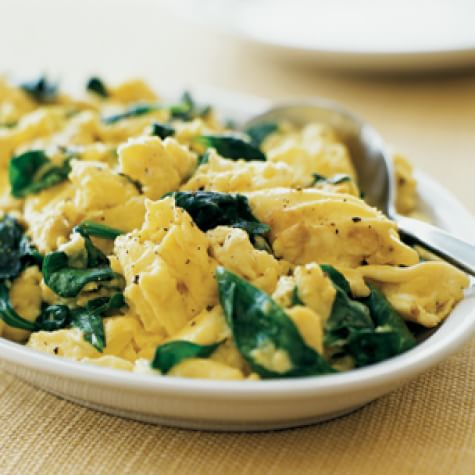

Eggs With Spinach

Description
This very simple recipe will result in a quick, healthy, and warm dish.
No less than 10 minutes required for a cheap and filling meal.
Ingredients
- Butter
- Spinach
- Eggs
- Milk
- Salt
Steps
- Scramble eggs, add salt and milk before scrambling
- Melt butter in a pan, Med. heat
- Place spinach in pan, still Med. heat
- Once spinach is cooked down and a darker green color, pour scrambled eggs into pan
- Keep stirring mix until eggs cooked as desired